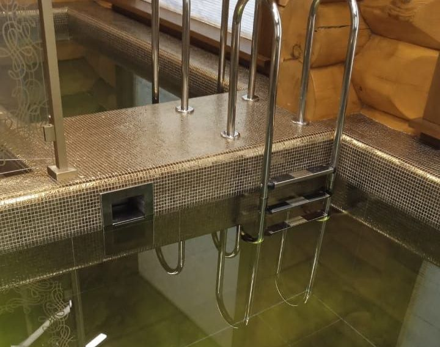

Введение
Скиммерный или переливной бассейн: решение начинается с правильного сценария
Один из ключевых вопросов проекта — выбрать скиммерную или переливную схему. На визуальном уровне отличие заметно по линии воды: в скиммерном бассейне она находится ниже борта, а в переливном может быть почти вровень с террасой. Но за эстетикой стоят разные требования к гидравлике, помещению, бюджету и обслуживанию.
Для частного дома нет универсального ответа. Скиммерная система рациональна, надежна и часто дешевле. Переливная дает более премиальный вид, активнее снимает загрязнения с поверхности и позволяет получить эффект зеркала воды, но требует переливной емкости, лотков и более сложного проекта.
Критерии
Что важно учесть заранее
Линия воды
Перелив создает ровную архитектурную плоскость, скиммер оставляет видимый отступ от борта.
Техническое помещение
Переливной системе нужна балансная емкость, датчики уровня и место для дополнительной обвязки.
Бюджет
Скиммер обычно проще и дешевле, перелив требует больше строительных и инженерных работ.
Уход за поверхностью
Перелив хорошо собирает загрязнения с зеркала воды по всему периметру или выбранной линии.
Расчет
Получить расчет стоимости
Подготовим ориентир бюджета, состав работ и инженерные решения под ваш участок, дом и желаемый формат эксплуатации.


Инженерия
Что важно учесть до выбора гидравлики
Скиммерная система забирает воду через специальные окна в стенке чаши. Она хорошо подходит для большинства частных бассейнов, если правильно рассчитать количество скиммеров, форсунок и направление потока. Такая схема проще в реализации, занимает меньше места и понятна в обслуживании.
Переливная система отводит воду через лоток в балансную емкость, откуда насос возвращает ее после фильтрации. Она выглядит эффектно и обеспечивает высокий уровень воды, но чувствительна к расчетам. Нужно правильно задать отметки, объем емкости, датчики, аварийный перелив и доступ к лоткам.
Выбор влияет на архитектуру участка. Перелив особенно красив там, где вода должна визуально соединяться с террасой, видом или фасадом. Скиммер лучше, когда нужен надежный семейный бассейн с разумным бюджетом и минимальной сложностью инженерии.
Этапы
Как проходит работа с АЛ Пулс
- Определить визуальный эффект. Решить, нужна ли вода в уровень с террасой или достаточно классической линии ниже борта.
- Оценить место. Проверить, есть ли пространство для балансной емкости, лотков и сервисного доступа.
- Посчитать бюджет. Сравнить не только чашу, но и гидравлику, отделку, автоматику и обслуживание.
- Рассчитать потоки. Подобрать скиммеры, форсунки, переливные лотки и насос по объему воды.
- Согласовать эксплуатацию. Понять, кто будет обслуживать систему и как часто нужен сервис.
Рекомендации
Как получить надежный результат
Решение о скиммере или переливе нужно принять до строительства чаши. Переделка гидравлической схемы после бетонирования или установки композитной чаши практически всегда сложная и дорогая.
Команда АЛ Пулс помогает связать проектирование, строительство, оборудование и сервис в единую систему. Такой подход уменьшает количество непредвиденных расходов, сохраняет эстетику объекта и делает ежедневное пользование бассейном понятным для владельца.
Консультация
Заказать консультацию
Ответим на вопросы, оценим исходные данные и предложим следующий шаг: концепцию, выезд специалиста или предварительный расчет.